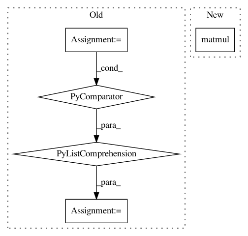

135a56e0935fbb04811f8ce7b9f514f498212f71,niftynet/layer/crf.py,,ftheta,#Any#Any#Any#Any#Any#Any#,148
Before Change
U.shape)
// Weighting Filter Outputs
Q2 = tf.add_n([Q1 * w for Q1, w in zip(Q1, kernel_weights)])
// Compatibility Transform
spatial_dim = infer_spatial_rank(U)
assert spatial_dim == 2 or 3, \
"Currently CRFAsRNNLayer supports 2D/3D images."
full_stride = expand_spatial_params(1, spatial_dim)
Q3 = tf.nn.convolution(input=Q2,
filter=mu,
strides=full_stride,
padding="SAME")
// Adding Unary Potentials
Q4 = U - Q3
// output logits, not the softmax
return Q4
After Change
// Compatibility Transform, Adding Unary Potentials
// output logits, not the softmax
return U - tf.reshape(tf.matmul(Q1, mu), U.shape.as_list())
def permutohedral_prepare(position_vectors):
In pattern: SUPERPATTERN
Frequency: 3
Non-data size: 5
Instances
Project Name: NifTK/NiftyNet
Commit Name: 135a56e0935fbb04811f8ce7b9f514f498212f71
Time: 2018-07-25
Author: wenqi.li@ucl.ac.uk
File Name: niftynet/layer/crf.py
Class Name:
Method Name: ftheta
Project Name: cornellius-gp/gpytorch
Commit Name: e8a945606e0b3dafe71ce2f1bf1b52ab3b05428c
Time: 2021-02-10
Author: wjm363@nyu.edu
File Name: gpytorch/lazy/kronecker_product_added_diag_lazy_tensor.py
Class Name: KroneckerProductAddedDiagLazyTensor
Method Name: _solve
Project Name: cornellius-gp/gpytorch
Commit Name: a7a12d157766b69cf4b1ddbb5fcdacfe485dc6fa
Time: 2019-04-03
Author: gpleiss@gmail.com
File Name: test/kernels/test_linear_kernel.py
Class Name: TestLinearKernel
Method Name: test_computes_linear_function_square_batch